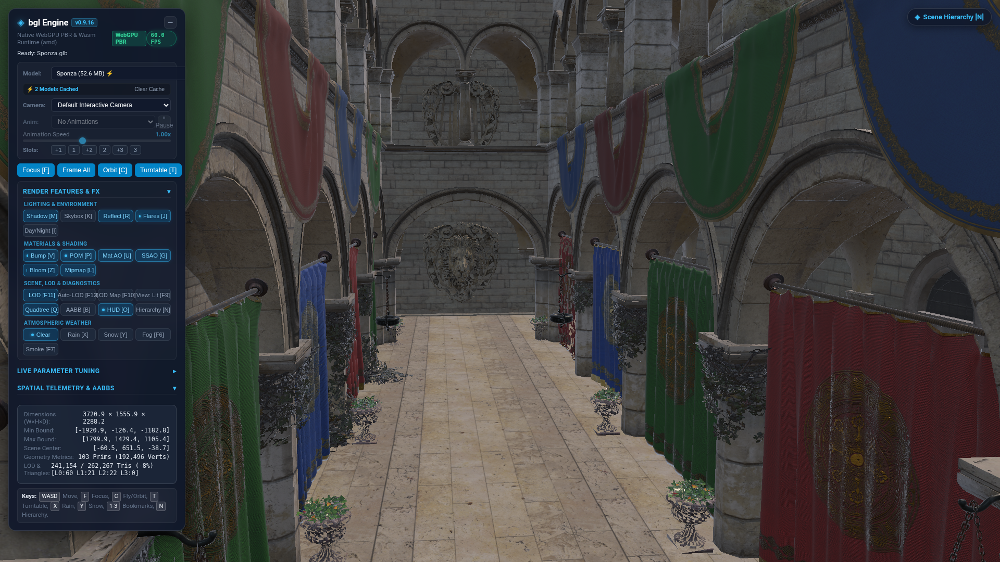

🎮 👉 RUN LIVE DEMO IN BROWSER (GitHub Pages / GitHack Preview) 👈
bgl Engine
bgl Engine is a modular C++23 3D graphics engine powered by WebGPU (wgpu-native on Linux desktop). It provides full glTF 2.0/2.1 PBR rendering, HDR Image-Based Lighting (IBL), Forward+ clustered lighting, directional PCF shadows, and a cinematic post-processing pipeline behind a clean, backend-free public API (#include <bgl/bgl.hpp>). The interactive desktop viewer in apps/viewer/ is a reference application built on top of the engine.
Quickstart (samples/01_hello_engine/main.cpp)
Core Concepts
| Concept | Role | Public Header |
|---|---|---|
| bgl::App & BGL_RUN | Lifecycle hooks (OnStart, OnUpdate, OnGui, OnResize, OnFileDrop, OnShutdown) | include/bgl/App.hpp |
| bgl::Engine | Facade owning window, GPU device, renderer, camera, and active scene | include/bgl/Engine.hpp |
| bgl::Input | Frame-buffered polling for keyboard & mouse (IsKeyDown/Pressed/Released, MouseDelta) | include/bgl/Input.hpp |
| bgl::RenderSettings | Plain-data rendering & post-processing options applied automatically every frame | include/bgl/Settings.hpp |
| bgl::gui | Immediate-mode frosted-glass UI (Begin, End, Section, widgets, Tooltip, optional hover, MessageBox, LoadingScreen, DiscoverFonts/LoadFont/SetDefaultFont/PushFont) | include/bgl/Gui.hpp |
| bgl::Entity | Lightweight handle to a scene node (transform, parent/child hierarchy, punctual lights) | include/bgl/Entity.hpp |
Using bgl Engine as a Library
Note: The Conan 2.x dependencies (conanfile.py / conan.lock) and third_party/wgpu-native must be available in your build environment. See docs/GETTING_STARTED.md for details.
Reference Viewer (apps/viewer)
The full-featured desktop viewer (bgl_viewer) lives in apps/viewer/ as a reference application of the bgl Engine. See the keyboard shortcuts and CLI reference below, or docs/ARCHITECTURE.md and docs/CHEATSHEET.md for engine internals.
Modular C++23 WebGPU & glTF 2.0/2.1 High-Performance 3D Renderer for Linux amd64 Desktop and WebAssembly (Wasm).

Crytek Sponza Atrium (assets/Sponza.glb, 103 primitives, 69 PBR textures, 262,267 triangles) rendered in real time by bgl-Engine v1.0.0 with Cook-Torrance GGX PBR, 16× Anisotropic Mipmapping, MikkTSpace Normal & Bump Mapping, Parallax Occlusion Mapping (POM), and Multi-Level Mesh & Shader LOD (LOD0–LOD3).
🚀 Live Web Application & Online Documentation (GitHub):
- GitHub Pages Web App: https://bkuolt.github.io/web-assembly-demo/
- Direct Live Preview (GitHack, Instant): https://raw.githack.com/bkuolt/web-assembly-demo/main/web/index.html
- Online Doxygen API Reference (GitHub Pages): https://bkuolt.github.io/web-assembly-demo/docs/ (automatically built & deployed via CI from Doxyfile)
- Web Architecture & Client Documentation: 📖 Read web/README.md for complete native WebGPU Cook-Torrance PBR specifications, zero-allocation rendering, and gesture guides.
Overview
bgl Engine is a modern, high-performance 3D graphics engine built in strict C++23 with a hardware WebGPU backend (wgpu-native on desktop) paired with a browser viewer powered by a freestanding C++23 Emscripten WebAssembly core (bgl_engine.wasm) and a native JS WebGPU WGSL renderer (BglWebGpuRenderer). It features complete glTF 2.0 and KHR material model support, HDR rendering (RGBA16Float) with advanced tonemapping, GPU compute culling & ray picking, live RAM & VRAM telemetry, PS5 DualSense console controller feel, Parallax Occlusion Mapping (POM) with self-shadowing, Multi-Bounce Ambient Occlusion, Directional Sun Lens Flares, true Image-Based Lighting (IBL), Forward+ clustered lighting, zero-GLFW architecture, PMR-backed memory management, HarfBuzz & FreeType 2 text shaping, spatial Quadtree partitioning, procedural atmospheric skybox, and dual-target deployment.
At a Glance: Feature & Capabilities Matrix
| Subsystem | Key Capabilities | Runtime Toggle / CLI |
|---|---|---|
| Multi-Level LOD & Debug Views | 4-stage Mesh & Shader LOD (LOD0–LOD3), Screen-Space Error (SSE) Quadtree selection, Shadow-Pass LOD1, \(4\times 4\) Bayer dithered cross-fade, Adaptive 60 FPS Auto-LOD, and 7 Diagnostic Views (Lit, LOD Heatmap, Normals, PBR, UV, Clay + Wireframe, Toon / Cel) | [F9]–[F12] / [;]/['] / --lod-bias / --lod-heatmap / --debug-view |
| SDF Glassmorphic Studio UI & Async Model Switcher | Single-batch 2D SDF UI (sdRoundedBox, drop shadows, frosted HDR glass backdrop blur), draggable studio panels, scrollable 19-model glTF Dropdown (assets/, web/assets/, Khronos samples), non-blocking std::jthread loader with ProgressBar + frosted DrawLoadingBanner, FPS sparkline, interactive HSV ColorEdit3, and scissor scroll areas | [F2] / Studio UI Panel |
| Cinematic Post-Processing Suite | Depth24Plus -> R32Float linear depth resolve, half-res Depth GTAO + bilateral blur, 5-mip Jimenez Bloom pyramid, GPU Auto-Exposure, Hi-Z SSR reflections, Vogel bokeh DoF, depth-gated Sun God Rays, edge chromatic aberration, 5 Color Grading presets, Film Grain, and FXAA 3.11 | Studio UI / [X] / [Z] / [G] / [J] |
| Extended KHR PBR & Shaders | KHR_materials_iridescence thin-film interference, KHR_materials_anisotropy, wrapped SSS backlight, roughness-aware 5-mip frosted refraction glass, 3D selection silhouette rim (outline.wgsl), procedural rain puddles, and Rayleigh/Mie + FBM volumetric cloud skybox | Automatic / Studio UI |
| glTF 2.0 Animations & Skinning | Full skeletal animation (128 joints with inverse bind matrices), morph target delta blending, decoupled TRS local transforms, and keyframe interpolation (LINEAR, STEP, CUBICSPLINE Hermite) | Automatic / glTF Animations |
| Native WebGPU PBR Engine | Hardware-accelerated native WebGPU browser engine (BglWebGpuRenderer, Cook-Torrance GGX PBR, 7-slot multi-texture bind groups, WGSL shaders, Khronos PBR Neutral tonemapping) | Automatic / Native WebGPU |
| GPU Compute Offloading | Parallel view-frustum culling (GpuCuller) and parallel ray-bounding picking (GpuRayPicker) using WebGPU compute shaders and atomic operations | Automatic / Live GPU compute |
| RAM & VRAM Telemetry | Real-time resident set size (RAM in MB) from OS kernel and atomic WebGPU VRAM buffer/texture tracking displayed on in-engine HUD | In-Engine HUD ([O] / [F3]) |
| PS5 DualSense Feel | Native DualSense recognition (0x054c), exponential aim response curve ( \(mag^{2.1}\)), pitch dampening ( \(0.70\)), smooth look damping, and rumble | Auto-detected / HUD Badge |
| Click-Picking & Outline | Ray unprojection with Möller-Trumbore triangle picking, vibrant 3D selection outline, bidirectional sync with hierarchy tree | Click in 3D / Click in tree |
| Focus [F] & Bookmarks | [F] frames selection, Home frames scene, 9 viewpoints saved/recalled via Ctrl+1..9 / 1..9 or UI slots | [F] / [Home] / [1]–[9] |
| Fly / WASD & Turntable | Dual navigation modes (Orbit & Fly for walking Sponza interior) plus continuous turntable autorotation with speed slider | [C] / [T] / UI buttons |
| glTF Cameras from File | Complete parsing of perspective and orthographic fastgltf::Camera instances mapped to scene transforms, selectable via dropdown | UI Camera Dropdown |
| Touch Controls (Web) | 1-finger orbit, 2-finger pinch-zoom, and 2-finger pan gestures with event prevention for mobile/tablet browsers | Touch gestures on canvas |
| Dual Gamepad Support | Native SDL_GameController on desktop, HTML5 Web Gamepad API in browser, 0.12 radial deadzone, dual-stick orbit/fly/pan | Gamepad sticks & triggers |
| Live Sun / Day-Night Cycle | Dynamic 24-hour diurnal progression ([I] / [F8]) with golden-hour sunset & lunar night lighting; Skybox, PCF shadows, lens flares, and specular highlights follow live | [I] / [F8] / Slider / --day-night-cycle |
| Alpha-Tested Shadows | Directional shadow pre-pass tests material textures and cutoff ( \(\alpha < \alpha_{\text{cutoff}}\)) for MASK and BLEND foliage/cutouts, casting accurate silhouette shadows | Automatic (alphaMode == MASK) |
| Screen-Space AO (SSAO/GTAO) | Real-time depth/contrast horizon gradient sampling complementing material occlusion maps and micro-cavities | [G] / Slider / HUD |
| HDR Emissive Bloom | Linear HDR bright-pass extraction with golden-angle multi-ring scatter glow for radiant emissive materials | [Z] / Slider / HUD |
| True Transmission & Refraction | Full KHR_materials_volume support, view-space Snell's law screen refraction, and physical Beer-Lambert volume extinction | Automatic (KHR_materials_volume) |
| Native Compressed Textures | Automatic KTX2 Basis Universal transcoding to native BC7, ASTC 4×4, or ETC2 based on WebGPU adapter capabilities | Automatic GPU feature detection |
| Parallax Occlusion Mapping (POM) | Steep parallax raymarching (8–32 view-adaptive layers) with secant interpolation and light-facing self-shadowing for deep 3D surface immersion | [P] / Slider / HUD |
| Atmospheric Weather (Rain, Snow, Fog, Smoke) | Directional rain streaks & droplet ripples ([X]/[F4]), drifting snowflakes & accumulation ([Y]/[F5]), exponential height/distance mist ([F6]), and rising turbulent FBM smoke plumes ([F7]) | [X]/[Y]/[F4]–[F7] / --rain / --snow / --fog / --smoke |
| Ambient Occlusion (AO) | glTF occlusion texture + micro-cavity + horizon contact + Jimenez multi-bounce color conservation with live intensity tuning | [U] / Slider / --no-ao |
| Directional Sun Lens Flares | Real-time post-processing lens flare with solar corona glow, anamorphic horizontal streaks, chromatic ghosts, optical halo rings, and screen-edge fade | [J] / Slider / HUD |
| Full Keyboard Navigation | Smooth WASD & Arrow key 3D camera pan/fly, + / - keys for zoom in / out with step clamping | [W]/[A]/[S]/[D] / [+]/[-] |
| HDR Rendering & Tonemapping | Multisampled 4× MSAA RGBA16Float HDR render targets, Khronos PBR Neutral, AgX (Blender 4 curve), and ACES Filmic tonemapping with dynamic exposure control | [X] / [+]/[-] / --exposure |
| Image-Based Lighting (IBL) | WebGPU Compute-generated Split-Sum BRDF LUT ( \(128\times 128\) RGBA16F), pre-filtered GGX specular cubemap mip chains, and \(L_2\) Spherical Harmonics diffuse irradiance | [E] / --env <preset> |
| Rotatable HDR Environments | 4 built-in environments (Mediterranean Courtyard, Sunset Studio, Overcast Atelier, Night Neon) plus custom .hdr/.exr ingestion, 360° rotation, Sharp/Blurred/Hidden skybox modes | [E] / [K] / --env-rot |
| Clustered Forward+ Lighting | glTF KHR_lights_punctual (Directional, Point, Spot lights) evaluated across a \(16\times 8\times 8 = 1024\) 3D frustum cluster grid with per-cluster bitmasks | Automatic / glTF Lights |
| Native GPU Compressed Textures | Hardware BC7, ASTC 4×4, and ETC2 EAC decompression directly via WebGPU features without CPU decompression overhead | Automatic GPU feature detection |
| Bump & Normal Mapping | MikkTSpace/Lengyel tangent generation, scale-invariant getTBN, tangent-space normal maps + UV-texel-space central-difference height gradients (textureSampleGrad) | [V] / --no-bump |
| Anisotropic Mipmapping | GPU render-pass mip pyramid ( \(1\times 1\)) with 3D normal-map vector renormalization (mipgen.wgsl), CPU mip-level helpers, pre-encoded KTX2 mips, and live 16× Aniso vs. Mip-0 switching | [L] / --no-mipmaps |
| Directional Shadow Mapping | \(2048\times 2048\) Depth32Float pre-pass (cached for static scenes), scene-fitted orthoRH_ZO light matrix, hardware slope-scale depth bias, 9-tap \(3\times 3\) PCF soft shadows | [M] / --no-shadows |
| Spatial Quadtree & Occlusion Culling | 4-way XZ-plane partitioning, Front-to-Back traversal, \(32\times 16\) Hi-Z OcclusionBuffer & sub-pixel culling, single-draw batched 3D wireframes | [H] / [Q] / --no-occlusion |
| URL & Remote Asset Streaming | Direct http://, https://, file://, and data: model loading via libcurl (native) and Fetch API (Wasm), URL Drag-and-Drop, and external .gltf buffer/texture URI resolution | --asset <url> / Drag & Drop |
| 3D Bounding Boxes (AABBs) | Fast Arvo Center-Extents transformation ( \(c' = M \cdot c\), \(e'_k = \sum_j |M_{jk}| e_j\)) rendered in a single batched GPU draw call | [B] / --no-bounds | | Atmospheric Skybox | Rayleigh-inspired zenith-to-horizon scattering, solar disk & corona, ground hemisphere bounce, far-plane depth clamping | [K] / --no-skybox | | HarfBuzz & FreeType 2 HUD | Dynamic \(1024\times 1024\) RGBA8 shelf-packed font atlas, Unicode shaping, zero-dependency embedded TTF fallback, live telemetry overlay | [O] / [F3] / --no-hud | | Browser Compatibility Warnings | Automated pre-flight validation of WebAssembly, WebGPU API, GPU adapter acquisition, and Secure Context (HTTPS/localhost) with user diagnostics | Automatic (Web) |
Key Architecture Highlights
- 100% Modern C++23 & Root Namespace bgl:
- bgl::core: Math, types, AABB, ray intersection, camera, memory pools, PMR arenas, POSIX signal handling, C++23 std::stacktrace crash diagnosis, logging.
- bgl::gpu: WebGPU device context, swapchain surface, 4x MSAA, WGSL PBR shaders, procedural atmospheric skybox, batched single-draw 3D wireframe bounding boxes.
- bgl::scene: High-speed multithreaded glTF ingestion (fastgltf), modular KTX / PNG / JPEG / WebP decoders with CMake toggles, Basis Universal transcoding, 16x anisotropic texture filtering with full CPU mip-mapping, spatial Quadtree partitioning with loose bounds, Möller-Trumbore ray picking.
- bgl::text: Dynamic RGBA8 font atlas, FreeType 2 glyph rasterization, HarfBuzz Unicode script and bidi text shaping, batched 2D quad renderer with alpha blending.
- bgl::ui: In-engine glassmorphism Debug Overlay HUD displaying real-time FPS, frame timing, camera coordinates, glTF scene metrics, and spatial culling telemetry.
- bgl::audio: 3D spatial sound engine via miniaudio.
- bgl::engine & bgl (include/bgl/, src/engine/): Backend-free public engine SDK (Engine, App, Input, RenderSettings, gui, Entity) and EngineCore runtime.
- bgl::app (apps/viewer/): Reference desktop viewer inheriting from EngineCore, CLI argument parser (--help, --version, --formats, --asset, etc.), studio UI, and debug HUD.
- Robust Spatial Partitioning & Frustum Culling:
- Hierarchical 4-way Quadtree partitioning on the XZ ground plane with loose bounding boxes (looseBounds_) and strict ContainsXZ containment.
- Primitives spanning across quadrant boundaries are held safely at their parent node, completely preventing disappearing geometry or pop-in artifacts.
- Broad-phase view frustum rejection eliminates whole quadrant subtrees; narrow-phase tests discard individual off-screen primitives.
- Sponza benchmark demonstrates 60% to 82% primitive culling ratios from the central courtyard.
- Batched AABB rendering: all scene, primitive, and quadtree wireframe bounding boxes are drawn in a single GPU draw call with per-vertex colors (Gold for scene, Cyan for primitives, Emerald green for quadtree partitions).
- POSIX Crash Signal Handler & Callstack Diagnostics:
- Catches SIGSEGV, SIGABRT, SIGFPE, SIGILL, and SIGBUS via sigaction with an alternate signal stack (sigaltstack).
- Safe, immediate async-signal-safe error logging: signal name, fault address, PID, and TID.
- Dual stack unwinding: raw execinfo backtrace plus demangled C++23 std::stacktrace with function signatures and file line numbers.
- Intentional test crashes accessible via --test-crash [segv|abrt|fpe].
- Modular Texture Format CMake Options (All ON by Default):
- -DBGL_ENABLE_PNG=ON/OFF (libpng)
- -DBGL_ENABLE_JPEG=ON/OFF (libjpeg-turbo with custom setjmp error handling)
- -DBGL_ENABLE_WEBP=ON/OFF (libwebp)
- -DBGL_ENABLE_KTX=ON/OFF (libktx 4.4.2)
- Queryable at runtime via ./bgl_viewer --formats or TextureDecoder::GetSupportedFormats().
- Multithreaded glTF Asset Ingestion:
- Lock-free parallel texture decoding across hardware worker threads (std::jthread, std::atomic<size_t> task dispatch).
- Parallel scene node extraction, transform hierarchy evaluation, and mesh primitive parsing (vertex attributes, bounding boxes, indices).
- Sub-second loading of large scenes like Sponza (69 multi-megabyte textures decoded concurrently).
- KTX & KTX2 Texture Support with Basis Universal Transcoding:
- Full KTX1 and KTX2 container ingestion via libktx (ktx/4.4.2).
- Automatic on-the-fly transcoding of Basis Universal compressed textures (UASTC and ETC1S) to 32-bit RGBA (KTX_TTF_RGBA32).
- Content-based magic-byte sniffing (\xABKTX 11\xBB and \xABKTX 20\xBB), MIME type detection, and path extension routing.
- HarfBuzz & FreeType 2 Text Rendering Pipeline:
- Cross-platform OS and workspace font discovery (FontLibrary::Discover/Find) supporting .ttf/.otf/.ttc collections and generic aliases ("sans", "mono", "serif", "embedded").
- Precise Unicode text shaping (TextShaper::Shape, Measure, word-aware WrapText) via HarfBuzz (hb_buffer_t, hb_shape).
- High-fidelity alpha & SDF glyph rasterization via FreeType 2 into dynamic 1024x1024 RGBA8 atlases with up to 4 Unicode fallback faces (AddFallbackFromFile / AddFallbackFromMemory).
- Zero-dependency embedded fallback font (Liberation Mono Regular) allowing standalone execution anywhere.
- Multi-font batched 2D WebGPU rendering (TextRenderer with SetFontAtlas/MeasureText/DrawTextAligned, 4x MSAA compatibility, and automatic atlas generation tracking).
- AAAA Visual Fidelity & Real-Time Rendering Features (Toggleable On/Off):
- Bump & Normal Mapping ([V] / --no-bump): Lengyel/MikkTSpace-style automatic tangent & bitangent basis generation (MeshPrimitive::ComputeTangents()), Gram-Schmidt orthogonalization in WGSL, tangent-space normal mapping, and screen-space derivative height bump perturbation (dHdX, dHdY).
- Mipmapping Support ([L] / --no-mipmaps): GPU render-pass mip-chain generation (mipgen.wgsl) down to \(1\times 1\) texels with 3D vector renormalization for normal maps, CPU mip helpers, and live runtime switching between 16x Anisotropic Trilinear Mipmapping and Base-Mip-0-Only sampling.
- Directional Shadow Mapping ([M] / --no-shadows): \(2048\times 2048\) Depth32Float directional shadow depth pre-pass fitted to the scene AABB (glm::orthoRH_ZO), hardware depth bias, and 9-tap \(3\times 3\) Percentage-Closer Filtering (PCF) soft shadows via textureSampleCompareLevel.
- Environment Cubemap Reflections ([R] / --no-reflections): 6-face pre-filtered HDR-style atmospheric environment cubemap ( \(64\times 64\times 6\) with 7 roughness-convolved mip levels), Karis split-sum analytic envBRDFApprox, and clearcoat environment reflections.
- Sponza Benchmark Scene: Loaded by default with human eye-level courtyard camera positioning (courtyardCenter = (-0.48, 2.0, -0.31), camDistance = 10.0m).
- Procedural Atmospheric Skybox ([K] / --no-skybox): Rayleigh-like zenith-to-horizon gradients, solar corona, and far-plane depth clamping.
- Complete glTF 2.0 & KHR Material Model:
- Core PBR Metallic-Roughness (Cook-Torrance GGX \(D\), Smith-GGX \(V\), Schlick Fresnel \(F\)).
- Tangent-space Normal Mapping (with vertex TANGENT ingestion and screen-space derivative fallbacks).
- Ambient Occlusion (AO) with configurable strength.
- Emissive maps with strength multipliers (KHR_materials_emissive_strength).
- Clearcoat lacquer layer (KHR_materials_clearcoat).
- Transmission and dielectric refraction (KHR_materials_transmission, KHR_materials_ior).
- Charlie microfiber sheen for textiles and fabrics (KHR_materials_sheen).
- Specular color and factor tinting (KHR_materials_specular).
- Double-sided rendering and unlit shading (KHR_materials_unlit).
- Alpha modes: Opaque, Mask (alpha cutoff discard), and Blend.
- Zero-GLFW Architecture:
- Linux Desktop: Native SDL2 windowing and hardware event handling.
- WebAssembly / Browser: Freestanding C++23 Emscripten WebAssembly core (src/wasm/wasm_bridge.cpp, web/dist/bgl_engine.wasm) with zero WASI imports, paired with the native JS WebGPU (BglWebGpuRenderer) frontend (with BGL_PLATFORM_WASM C++ guards prepared for future direct Emscripten emdawnwebgpu binding).
- Reproducible Conan 2.x Dependency Management:
- All third-party dependencies resolved via Conan 2.x with explicit lockfile pinning (conan.lock).
- FreeType (freetype/2.13.2), HarfBuzz (harfbuzz/11.4.1), KTX (ktx/4.4.2), and miniaudio (miniaudio/0.11.25).
- Zero system library divergence across build environments.
Repository Structure
Advanced Real-Time Rendering Pipeline (Clustered Forward+ PBR & Cinematic Post-Processing)
Every frame records a multi-pass WebGPU command stream into the active WGPUCommandEncoder: a Directional Shadow Depth Pre-Pass (2048×2048 Depth32Float), a 4× MSAA Split HDR Forward+ PBR Pass (Opaque -> Opaque Copy 5-Mip Chain -> Atmospheric Skybox -> Transparent & Transmission + Selection Outline), the PostProcessPass Suite (Depth Linearize -> Half-Res GTAO + Bilateral Blur -> 5-Mip Bloom -> GPU Auto-Exposure -> Hi-Z SSR / Bokeh DoF / God Rays / Color Grading / Tonemapping -> FXAA 3.11), and the final 2D SDF Studio UI & HarfBuzz Overlay.
1. Bump Mapping & Tangent-Space Normal Mapping ([V] / --no-bump)
- MikkTSpace / Lengyel Tangent Generation (MeshPrimitive::ComputeTangents()): When a glTF primitive omits explicit TANGENT attributes, the loader computes per-vertex tangents \(\mathbf{T}\) and bitangents \(\mathbf{B}\) from triangle edges \((\Delta \mathbf{p}_1, \Delta \mathbf{p}_2)\) and UV deltas \((\Delta u_1, \Delta v_1, \Delta u_2, \Delta v_2)\), orthogonalized via Gram-Schmidt against the vertex normal \(\mathbf{N}\):
\[\mathbf{T}' = \text{normalize}\!\left(\mathbf{T} - \mathbf{N}(\mathbf{N} \cdot \mathbf{T})\right), \quad w = \text{sign}\!\left((\mathbf{N} \times \mathbf{T}) \cdot \mathbf{B}\right) \in \{-1, +1\}\]
- Dual Normal & Screen-Space Height Bump Perturbation: In kPbrShaderWGSL, when MaterialFlags::EnableBumpMapping is active, tangent-space normal maps (normalTexture) are combined with screen-space height derivatives (dpdx(height), dpdy(height)) to perturb the shading normal \(\mathbf{N}\) along \(\mathbf{T}\) and \(\mathbf{B}\) controlled by ubo.bumpScale. All derivatives and texture samples execute in strict uniform control flow before alpha-mask discard.
2. Mip-Mapping with Normal-Map Vector Renormalization ([L] / --no-mipmaps)
- Full Mip Pyramid Generation (CalculateMipLevels & GenerateNextMipLevel): Every 2D texture generates \(\lfloor \log_2(\max(W, H)) \rfloor + 1\) mip levels down to \(1 \times 1\).
- Color & Material Maps (isNormalMap = false): 2×2 box-filter downsampling preserving average luminance and alpha coverage.
- Normal Maps (isNormalMap = true): Decodes 4 parent texels into 3D vectors \(\mathbf{n}_i \in [-1, 1]^3\), sums and renormalizes \(\bar{\mathbf{n}} = \text{normalize}(\sum \mathbf{n}_i)\) before re-packing to RGBA8Unorm, preventing normal length decay and specular dulling at oblique distances.
- Live Sampler Switching: Pressing L toggles PipelineManager::SetMipmappingEnabled(), rebuilding material bind groups on the fly between defaultSampler_ (16× Anisotropic Trilinear, lodMaxClamp = 32.0) and noMipSampler_ (Base Mip 0 Only, lodMaxClamp = 0.0).
3. Directional Shadow Mapping with 3×3 PCF ([M] / --no-shadows)
- Scene-Fitted Orthographic Light Projection (ComputeDirectionalLightMatrix): Constructs a tight right-handed zero-to-one orthographic projection (glm::orthoRH_ZO) centered on sceneAABB.Center() with radius \(R = \max(\|\text{Extents}\|, 10.0)\) so all 8 scene corners map into WebGPU clip space \([-1, 1]^2 \times [0, 1]\).
- Hazard-Free Shadow Pass & 9-Tap PCF Kernel: Uses a dedicated 1-entry shadowBindGroupLayout_ (binding only @binding(0) UBO) during RenderShadowPass to prevent WebGPU read/write resource hazards on shadowDepthTexture_. In the main pass, sampleShadowPCF() evaluates a \(3 \times 3\) Percentage-Closer Filtering kernel via textureSampleCompareLevel with slope-scaled normal offset bias.
4. Environment Cubemap Reflections & Specular IBL ([R] / --no-reflections)
- Pre-Filtered 6-Face Roughness Cubemap (GenerateEnvCubemapFaceMip): Generates a \(64 \times 64 \times 6\) WGPUTextureViewDimension_Cube texture with 7 mip levels (roughness \(\in [0, 1]\)). Each mip level convolves the procedural atmospheric sky, horizon glow, solar disk, and ground bounce over a roughness-weighted lobe.
- Karis Split-Sum Specular & Clearcoat IBL: Samples textureSampleLevel(envCubemap, defaultSampler, R, roughness * maxMip) along the reflection vector \(\mathbf{R} = \text{reflect}(-\mathbf{V}, \mathbf{N})\) and applies the analytic split-sum BRDF (envBRDFApprox(F0, roughness, NdotV)) plus clearcoat reflection weighting.
Spatial Quadtree Partitioning & Frustum Culling
To maintain smooth real-time framerates when rendering complex scenes such as Sponza (103 mesh primitives, 69 high-resolution textures), the engine employs a hierarchical 4-way Quadtree spatial partition on the XZ ground plane.
Key Technical Mechanisms
- Strict ContainsXZ Containment: Primitives are only pushed down to child quadrants if their world-space AABB is completely contained within that quadrant on the XZ plane:
\[\text{inner.min} \ge \text{outer.min} - \epsilon \quad \text{and} \quad \text{inner.max} \le \text{outer.max} + \epsilon\]
Primitives that straddle dividing boundaries (e.g., long hallway walls, ceilings) remain stored at the parent node level. - Loose Bounding Boxes (looseBounds_): Every Quadtree node tracks a dynamic bounding box that tightly encloses all primitives and descendant subtrees within it. During frustum queries, the broad-phase test checks against looseBounds_:
- If !frustum.IntersectsAABB(looseBounds_), the entire quadrant subtree is culled in a single test.
- Geometry that physically extends outside the geometric quadrant boundary is never prematurely discarded, eliminating visual popping and clipping artifacts.
- **WebGPU \([0, 1]\) Depth Frustum Extraction:** Frustum clipping planes are extracted using the Gribb-Hartmann algorithm adapted specifically for WebGPU's right-handed zero-to-one clip space (perspectiveRH_ZO):
- Near plane: \(Z_{\text{clip}} \ge 0 \implies \text{row}_2 \cdot P \ge 0\)
- Far plane: \(Z_{\text{clip}} \le W_{\text{clip}} \implies (\text{row}_3 - \text{row}_2) \cdot P \ge 0\)
- Sponza Atrium Culling Performance Benchmark: From the courtyard floor perspective (target = (-0.48, 2.0, -0.31), camDistance = 10.0m):
| View Direction from Courtyard | Visible Primitives | Culled Primitives | Culling Ratio |
|---|---|---|---|
| Looking along +X | 41 / 103 | 62 / 103 | 60.2 % |
| Looking along -X | 41 / 103 | 62 / 103 | 60.2 % |
| Looking along +Z | 25 / 103 | 78 / 103 | 75.7 % |
| Looking along -Z | 19 / 103 | 84 / 103 | 81.6 % |
| Looking UP at sky | 42 / 103 | 61 / 103 | 59.2 % |
Building and Running
Prerequisites
- Modern C++23 compiler (GCC 13+ or Clang 17+)
- CMake 3.28+
- Ninja build system
- Conan 2.x
- Vulkan SDK and graphics drivers with WebGPU support
1. Install Dependencies with Conan
2. Configure and Build
Note: Each texture format decoder can be independently disabled at configure time (e.g., -DBGL_ENABLE_KTX=OFF or -DBGL_ENABLE_WEBP=OFF). The engine automatically adjusts runtime decoding and reports available formats.
3. Run the Comprehensive Unit Test Suite
4. Launch Native Desktop Viewer
The executable automatically resolves relative RPATHs to its shared libraries and WebGPU backend:
Command-Line Arguments
| Option | Argument | Description | Default |
|---|---|---|---|
| -h, --help | — | Display formatted help screen with all arguments and controls | — |
| -v, --version | — | Print engine version string | 1.0.0 |
| --formats | — | Query compiled texture decoders and libcurl streaming availability | — |
| -a, --asset | <path\|url> | Load specified .glb or .gltf model from local path or HTTP/HTTPS URL | Auto-detect |
| -w, --width | <pixels> | Initial window width | 1280 |
| -H, --height | <pixels> | Initial window height | 720 |
| -l, --log-level | <level> | Logging level (trace, debug, info, warn, error) | info |
| --no-skybox | — | Start with procedural atmospheric skybox disabled | Enabled |
| --no-hud | — | Start with in-engine Debug Overlay HUD hidden | Visible |
| --no-bounds / --bounds | — | Hide / show 3D wireframe bounding boxes | Visible |
| --quadtree | — | Start with 3D Quadtree ground boundaries enabled | Disabled |
| --no-bump / --bump | — | Toggle Tangent-Space Normal & Height Bump Mapping | Enabled |
| --no-mipmaps / --mipmaps | — | Toggle 16x Anisotropic Trilinear Mipmapping vs Mip-0 | Enabled |
| --no-shadows / --shadows | — | Toggle Directional Shadow Mapping (2048x2048 3x3 PCF) | Enabled |
| --no-reflections / --reflections | — | Toggle Environment Cubemap Specular Reflections (IBL) | Enabled |
| --no-ao / --ao | — | Toggle glTF Ambient Occlusion & Micro-Cavities | Enabled |
| --no-occlusion / --occlusion | — | Toggle Quadtree Hierarchical Occlusion Culling (Hi-Z + Sub-Pixel) | Enabled |
| --no-lod / --lod | — | Toggle Multi-Level Mesh & Shader LOD System (LOD0–LOD3) | Enabled |
| --auto-lod / --no-auto-lod | — | Enable / disable Adaptive 60 FPS Auto-LOD scaling | Disabled |
| --lod-bias | <0.25-4.0> | Screen-Space Error LOD distance bias multiplier | 1.0 |
| --lod-heatmap | — | Start in LOD Heatmap diagnostic visualization mode | Disabled |
| --debug-view | <lit\|lod\|normals\|pbr\|uv> | Select initial diagnostic shading mode | lit |
| --rain / --snow / --fog / --smoke | — | Start with Rain, Snow, Fog, or Smoke shader active | Clear |
| --weather | <clear\|rain\|snow\|fog\|smoke> | Select initial atmospheric weather mode | clear |
| --weather-intensity | <0.0-2.0> | Precipitation, fog, and smoke density intensity | 1.0 |
| --wind | <-1.0-1.0> | Lateral wind direction and speed | 0.3 |
| --time | <0.0-24.0> | Initial diurnal time of day in hours | 14.0 |
| --day-night-cycle | — | Enable automatic continuous day/night progression | Disabled |
| --day-night-speed | <hrs/sec> | Automatic day/night cycle speed multiplier | 1.0 |
| --test-crash | [segv\|abrt\|fpe] | Trigger intentional crash to verify signal handler and stacktrace | segv |
| --headless | — | Run in headless CI smoke-test mode (renders 10 frames and exits) | Disabled |
Interactive Desktop Controls:
- Mouse / Picking: LMB + Drag to Orbit, RMB / Shift + Drag to Pan, Scroll Wheel to Zoom, Double-Click / MMB to pick node with RayPicker & display 3D Selection Outline.
- Studio UI & Overlays: F1 Wireframe Overlay, F2 SDF Studio Settings UI (with scrollable 19-model glTF Selector Dropdown, live Loading Progress Bar, Scene Tree & Theme Customizer), O / F3 FreeType 2 + HarfBuzz Debug Overlay HUD.
- PBR & Lighting: V Bump/Normal Mapping, L 16x Aniso Mipmapping, M PCF Shadows, R Specular IBL Reflections, U Ambient Occlusion, P Parallax Occlusion Mapping, E Environment Preset, [ / ] Rotate Environment (-5° / +5°), K Skybox Mode (Sharp / Blurred / Hidden).
- Post-Processing & Exposure: X Cycle Tonemapper (Khronos PBR Neutral / AgX / ACES), Z Emissive HDR Bloom, G GTAO/SSAO, J Sun Lens Flare, Shift + (+ / -) Exposure.
- Weather & Day/Night Cycle: Y Cycle Weather (Clear / Rain / Snow / Fog / Smoke), F4–F7 Direct Weather Toggles, I / F8 Auto Day/Night Cycle, , / . Step Time of Day (-30m / +30m).
- Spatial Culling, LOD & Views: B AABB Wireframes, Q Quadtree Ground Partitions, H Hi-Z Occlusion Culling, N / F9 Cycle Diagnostic View, F10 LOD Heatmap, F11 Multi-Level LOD, F12 Auto-LOD, ; / ' LOD Bias (-0.15 / +0.15).
- Camera & Streaming: W/A/S/D + Arrows Move, + / - Zoom, F Focus Selection/Bounds, C Orbit / Fly Mode, T Turntable, Ctrl+1..9 / 1..9 Camera Bookmarks, Drag & Drop .glb/.gltf or HTTP/HTTPS URL, ESC Exit.
Generating & Browsing Doxygen API Documentation
Complete HTML API documentation (with namespace modules, collaborative UML diagrams via Graphviz SVGs, Interactive Treeview, Dark/Light toggle, and MathJax equations) is generated from Doxyfile and published automatically to GitHub Pages on every release/push via .github/workflows/ci.yml:
- Online (GitHub Pages): https://bkuolt.github.io/web-assembly-demo/docs/
- Generate Locally: Open build/docs/html/index.html in any browser to inspect the generated documentation offline.# Direct via Doxygendoxygen Doxyfile# Or via Taskfile / CMake targettask docscmake --build build/Release --target docs
WebAssembly Browser Viewer & Minimal Web App Packaging
Live Demo on GitHub
You can launch the WebAssembly & WebGPU viewer directly in your browser without installing any local tools:
- GitHub Pages (Live App): https://bkuolt.github.io/web-assembly-demo/
- Instant Preview (raw.githack): https://raw.githack.com/bkuolt/web-assembly-demo/main/web/index.html
Launching the Web Viewer Locally
Serve the web/ directory with any static HTTP server:
Navigate to http://localhost:8080 to access the full-featured browser viewer:
- Streaming WebAssembly Compilation: Near-instant startup leveraging WebAssembly.instantiateStreaming to compile bytecodes concurrently as they arrive across the network.
- Real-Time Streaming Asset Transfer: Live byte-level transfer progress indicator tracking received megabytes, total size, percentages, and bandwidth (MB/s).
- User-Facing Toast Notifications: Non-intrusive floating toast banners alerting users to network errors, HTTP 404/500 responses, dropped file parse issues, or WebGPU context warnings.
- Structured Developer Logging: Rich, color-coded console logs ([Engine], [Wasm], [WebGPU], [Network], [glTF], [Perf]) with millisecond timestamps and timing benchmarks.
- Interactive Scene Graph Tree: Inspect the live hierarchy of nodes, meshes, vertices, and triangle counts.
- Collapsible glTF JSON Inspector: Browse the underlying glTF 2.0 JSON structure in a syntax-highlighted, expandable tree view.
- Live Spatial Telemetry Card: Real-time display of Scene AABB dimensions (width, height, depth), min/max bounding coordinates, scene center, and geometry metrics.
- Pills & Quick Toggles: One-click toggles for Bounding Boxes [B], Quadtree Bounds [Q], Atmospheric Skybox [K], In-Engine HUD [O], and instant switching across 19 built-in local and Khronos sample models (ToyCar, Sponza, RobotExpressive, Soldier, etc.).
Packaging the Minimal Web App (Zip)
A packaging script and CMake target generate a clean, minimal, self-contained distribution archive (dist/bgl_web_app_minimal.zip, ~4 MB) containing only the essential production assets, omitting large benchmark models:
Unit Testing Suite
The engine includes an extensive, production-grade test suite with 285 C++ GTests across 39 test suites, a static module layering check (LayeringCheck), a headless GPU smoke CTest (NativeHeadlessSmokeTest), plus 73 Web unit tests and headless WebGPU/browser E2E suites (6/6 CTest targets):
| Test Suite | Tests | Description |
|---|---|---|
| RenderingFeaturesTest | 58 | Bump Mapping tangents & handedness, mipmaps & normal renormalization, shadow matrices, cubemap IBL, uniform std140 packing, clustered Forward+ Z-slices, POM, Multi-Bounce AO, lens flare, tonemappers, KTX2 targets, transmission Volume attenuation, bloom, weather (rain/snow/fog/smoke), diurnal sun, DualSense response curves, GpuCuller/GpuRayPicker, DebugOverlay, per-channel KHR_texture_transform, split passes & offscreen WebGPU validation. |
| TypesMathTest | 24 | AABB expansion/overlap/grazing rays, Hesse planes, WebGPU perspective frustum planes, 96-byte Vertex alignment, MikkTSpace tangents, normal-map mipmaps, shadow matrices, cubemap mip generation, Arvo box transform, slerp/affine inversion, and degenerate geometry safety. |
| CameraTest | 18 | Orbit rotation, lateral/vertical pan, zoom clamping, view/projection composition, screen-point-to-ray unprojection, pitch clamping, ultrawide/portrait aspect ratios, WASD/fly navigation, bounds framing, bookmarks, and glTF camera ingestion. |
| CommandLineTest | 18 | Default config, --help, --version, --formats, resolution, feature toggles, weather/time-of-day flags, LOD bias & debug views, crash signal options, --headless, and invalid argument fallbacks. |
| GltfLoaderTest | 15 | ToyCar.glb parsing, KHR material/iridescence/anisotropy extensions, corrupted GLB rejection, deep hierarchy transforms, monotonic async load progress callbacks & cancellation, builtin 19-model preset resolution, async worker teardown safety, and optional 1 GB stress test. |
| MemoryPoolTest | 15 | Fixed-size block allocation, multi-block chaining, free-list reuse, destructor tracking, move semantics, nullptr/rapid-LIFO safety, 64-byte alignment, and PMR monotonic ScratchArena stress tests. |
| RayPickerTest | 14 | Möller-Trumbore ray-triangle direct/edge/vertex hits, backface/negative-distance rejection, hit normal orthogonality, hierarchical child transforms, and empty/multi-root picking. |
| AnimationTest | 14 | Step / Linear / Slerp / CubicSpline samplers, single/zero-duration/empty keyframes, SceneNode TRS decoupling, hierarchical propagation, morph target blending, negative delta clamping & loop wrapping, and skeletal skin joint matrices. |
| QuadtreeTest | 13 | 4-way XZ subdivision, loose bounds, Refit() node relocation across quadrants, ContainsXZ, Sponza courtyard culling ratios, front-to-back Hi-Z occlusion buffer tile tests, and LOD0–LOD3 bias scaling. |
| TextRenderingTest | 11 | Embedded Liberation Mono integrity, FreeType 2 alpha & SDF atlas initialization, glyph rasterization, HarfBuzz shaping, CRLF/empty/whitespace/UTF-8 handling, multi-line layout, and custom tint preservation. |
| TextureDecoderTest | 9 | Format capability queries, empty/corrupt payload rejection, magic-byte sniffing (PNG, JPEG, WebP, KTX2), HDR/EXR signatures, PMR decoding, KtxTarget names, and NPOT mip level calculations. |
| ThreadPoolTest | 9 | Worker initialization, singleton identity, concurrent async futures, ParallelFor partitioning & atomic accumulation, empty/inverted bounds, nested starvation guard, and exception propagation. |
| AssetManagerTest | 8 | 64-bit FNV-1a hashing (std::span / std::string_view), texture cache insertion/deduplication/replacement, KTX2 validation, scratch arena clear, bit-avalanche, and missing path error handling. |
| CrashHandlerTest | 6 | POSIX signal handler install/uninstall cycles, std::stacktrace callstack printing, subslice/empty safety, 1024-char header bounds, and idempotent re-installation. |
| SoundEngineTest | 6 | Audio lifecycle & initialization, uninitialized/missing-file error handling, multiple stops safety, and idempotent shutdown/double-init. |
| ImmediateUIAdvancedWidgetsTest | 5 | SDF & glassmorphic shader features, HSV roundtrips, Slider/CollapsingHeader/Sparkline/ScrollArea/Window drag, ColorEdit3 popup HSV manipulation, and scrollable Dropdown/ProgressBar/DrawLoadingBanner. |
| GoldenImageTest | 4 | Headless GLB golden geometry validation, offscreen buffer determinism, FNV-1a deterministic content hashing, and shared primitive instancing verification. |
| ShaderManagerTest | 4 | WGSL #include expansion & #pragma once, circular/missing include error detection, embedded entry-point verification, and hot-reload change detection. |
| Public SDK & Engine Suites | 18 | InputState (7), EntityOps (5), RenderSettings (2), GuiPublicApi (2), EnginePublicApi (1), EntityHandle (1), plus ApplicationModelLoader presets. |
| UI Modal, Hover & Font Suites | 8 | FontLibraryTest, TextShaperTest, TextRendererTest, ImmediateUIHoverAndTooltipTest, ImmediateUIMultiFontTest, ImmediateUIModalAndLoadingTest (2), and ImmediateUILayoutAndControlsTest. |
| Single-Test Targeted Suites | 8 | GamepadTest (1), ImmediateUITest (1), ImmediateUiSafetyTest (1), PipelineDelegationTest (1), PostProcessPassTest (1), QuadtreeLodTest (1), ShaderManagerSecurityTest (1), and TextureDecoderHdrTest (1). |
Changelog & Release History
See CHANGELOG.md for the complete version history from v0.6.0 through v1.0.0 and ongoing Unreleased developments:
- Unreleased: Simplified & expanded bgl::gui API (Section, Dropdown, ColorPicker, Progress, Sparkline, Badge), optional animated hover effects & frosted-glass Tooltip across all widgets, queued/immediate frosted-glass MessageBox & LoadingScreen, cross-platform FontLibrary OS font discovery & multi-font slots, SDF Custom UI Studio, scrollable 19-model glTF dropdown with async background loading & frosted progress banner, half-res GTAO + bilateral blur, 5-mip Jimenez Bloom, GPU Auto-Exposure, Hi-Z SSR, Bokeh DoF, Sun God Rays, Chromatic Aberration, 5 Color Grading presets, FXAA 3.11, 3D selection outlines, extended KHR PBR (iridescence, anisotropy, SSS, 5-mip frosted refraction), modular source split (CMakeLists.txt), and online GitHub Pages Doxygen API documentation (Doxyfile).
- 1.0.0: Official 1.0 production release — complete RAII Handle<> WebGPU resource lifecycle across all GPU passes, decomposed FastGltfLoader / PipelineManager / Application subsystems, consolidated swapchain and attachment helpers, zero compiler or clang-tidy warnings, and verified cross-compiler/sanitizer/browser E2E parity.
- 0.9.18: Modular external .wgsl shader pipeline with #include/#pragma once and live hot-reload, split Opaque/Skybox/Transparent+Transmission HDR pass, EXT_mesh_gpu_instancing, Quadtree::Refit(), modular web client (web/js/), and upgraded Conan 2 dependencies.
- 0.7.0: Bump & Normal Mapping ([V]), Vector-Renormalized Mipmapping ([L]), 2048×2048 3×3 PCF Directional Shadow Mapping ([M]), 6-Face Roughness Environment Cubemap Reflections ([R]), C++23 {} uniform initialization, std::span APIs, and multithreaded CPU mip/cubemap/tangent generation.
- 0.6.8: Per-format CMake options, POSIX crash signal handler with C++23 std::stacktrace, desktop CLI parser, batched single-draw AABB wireframes, Quadtree loose-bounds culling fix, minimal web zip packager, and 1 GB megacity stress test.
- 0.6.7: KTX1/KTX2 texture support with Basis Universal transcoding (libktx) and multithreaded glTF asset ingestion.
- 0.6.6: FreeType 2 & HarfBuzz Unicode text rendering pipeline and In-Engine Debug Overlay HUD.
- 0.6.5: Procedural atmospheric skybox and 3D wireframe AABB bounding boxes.
- 0.6.4: Default Sponza atrium scene, 4× MSAA, 16× Anisotropic filtering, and initial XZ-Quadtree frustum culling.
- 0.6.0 – 0.6.3: Core modular C++23 WebGPU architecture, KHR PBR material extensions, Web Scene Graph & JSON Inspector, and CI/CD automation.
License
MIT License. See [LICENSE](LICENSE) for details.